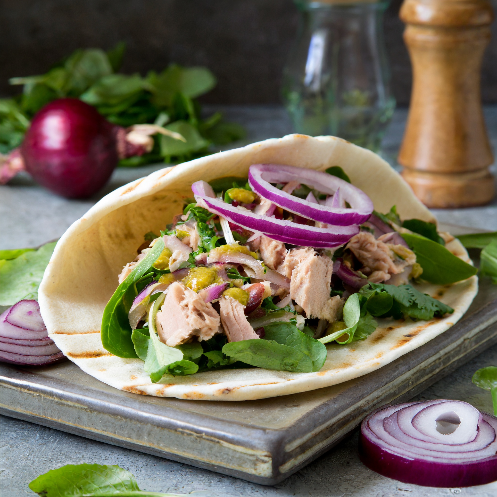

Tuna Salad Pita Pocket

Description
A simple and healthy flavour explosion.
Fresh pita bread with tuna salad, red onions, and spinach.
Ingredients
- 1 pita
- 1 can of tuna - flaked in water
- 2 tablespoons of light mayonnaise
- 1/4 red onion diced
- 1 stalk of celery
- 2 cups of spinach
- Freshly ground pepper to taste
Steps
- Open tuna can and drain out liquid.
- Dice red onion.
- Chop celery.
- Prepare tuna salad: in a bowl, mix tuna, mayonnaise, celery, and freshly ground pepper.
- Stuff pita with spinach and tuna salad.
- Enjoy!